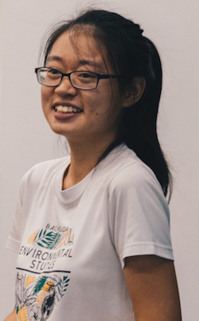

|  | OH Ren MinResearch Assistant |
Academic history
Bachelor of Environmental Studies (Hons. Distinction), specializing in Environmental Biology (National University of Singapore, 2019)
Bio
The oceans were the only ecosystem that would capture my attention since young. Driven to better understand this odd fascination, I made my first foray into marine biology by embarking on a research internship, then volunteering and working as a marine guide. My undergraduate studies further cultivated an interest in all aspects of marine biology. Hence, I completed my UROPS and Honours’ Thesis in the lab, studying the Corallimorpharia (Anthozoa: Cnidaria) of Singapore and microbial communities in benthic and sub-bottom reef sediment, respectively. These experiences have left me humbled and inspired by the resilience of marine life, despite the threats and (generally) lesser attention they receive – a great source of motivation driving my research endeavours.
Research interests
My research interests lie broadly in coral reef biodiversity, ecology and conservation. My Honours’ thesis involved identifying microbial communities associated with the sub-bottom reef environment of Singapore using sediment samples obtained from intertidal reef cores. I grew to appreciate the utility of reef cores as a temporal log of the reef’s history and the possibility of using this knowledge to better inform future conservation measures. Hence, my current work aims to analyse the community structure of other calcifying animal groups present in the cores. I hope to gain a more comprehensive understanding of how reef-associated communities in Singapore have responded to environmental parameters over time.